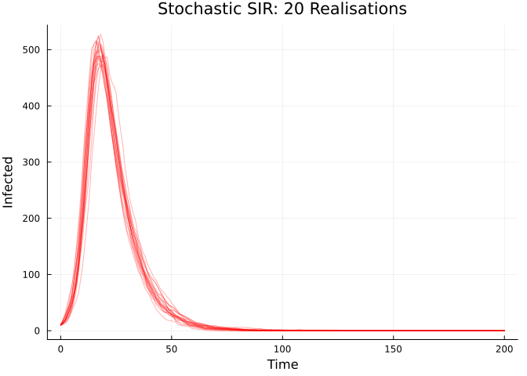
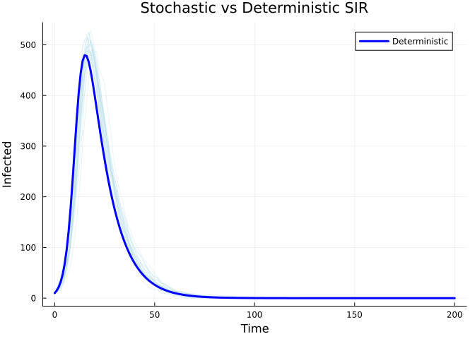

Stochastic Discrete-Time SIR
Introduction
This vignette demonstrates a stochastic discrete-time SIR model using update() equations with binomial transitions.
Model Definition
In a stochastic discrete-time model, transitions are random draws:
using Odin
using Plots
sir_stoch = @odin begin
update(S) = S - n_SI
update(I) = I + n_SI - n_IR
update(R) = R + n_IR
initial(S) = N - I0
initial(I) = I0
initial(R) = 0
p_SI = 1 - exp(-beta * I / N * dt)
p_IR = 1 - exp(-gamma * dt)
n_SI = Binomial(S, p_SI)
n_IR = Binomial(I, p_IR)
beta = parameter(0.5)
gamma = parameter(0.1)
I0 = parameter(10)
N = parameter(1000)
endOdin.DustSystemGenerator{var"##OdinModel#277"}(var"##OdinModel#277"(3, [:S, :I, :R], [:beta, :gamma, :I0, :N], false, false, false, false, false, Dict{Symbol, Array}()))Multiple Realisations
We can run multiple stochastic realisations simultaneously:
pars = (beta=0.5, gamma=0.1, I0=10.0, N=1000.0)
times = collect(0.0:1.0:200.0)
n_particles = 20
result = simulate(sir_stoch, pars;
times=times, dt=1.0, seed=42, n_particles=n_particles)
println("Result shape: ", size(result), " (state × particles × times)")Result shape: (3, 20, 201) (state × particles × times)p = plot(title="Stochastic SIR: 20 Realisations",
xlabel="Time", ylabel="Infected",
linewidth=1, alpha=0.5, legend=false)
for i in 1:n_particles
plot!(p, times, result[2, i, :], color=:red, alpha=0.3)
end
p
Comparing to Deterministic
sir_det = @odin begin
deriv(S) = -beta * S * I / N
deriv(I) = beta * S * I / N - gamma * I
deriv(R) = gamma * I
initial(S) = N - I0
initial(I) = I0
initial(R) = 0
beta = parameter(0.5)
gamma = parameter(0.1)
I0 = parameter(10)
N = parameter(1000)
end
det_result = simulate(sir_det, pars; times=times)
p = plot(title="Stochastic vs Deterministic SIR",
xlabel="Time", ylabel="Infected")
for i in 1:n_particles
plot!(p, times, result[2, i, :], color=:lightblue, alpha=0.3, label="")
end
plot!(p, times, det_result[2, 1, :], color=:blue, linewidth=3, label="Deterministic")
p
Conservation Check
for i in 1:n_particles
total = result[1, i, :] + result[2, i, :] + result[3, i, :]
@assert all(total .≈ 1000.0) "Particle $i: population not conserved"
end
println("✓ All particles conserve total population")✓ All particles conserve total population